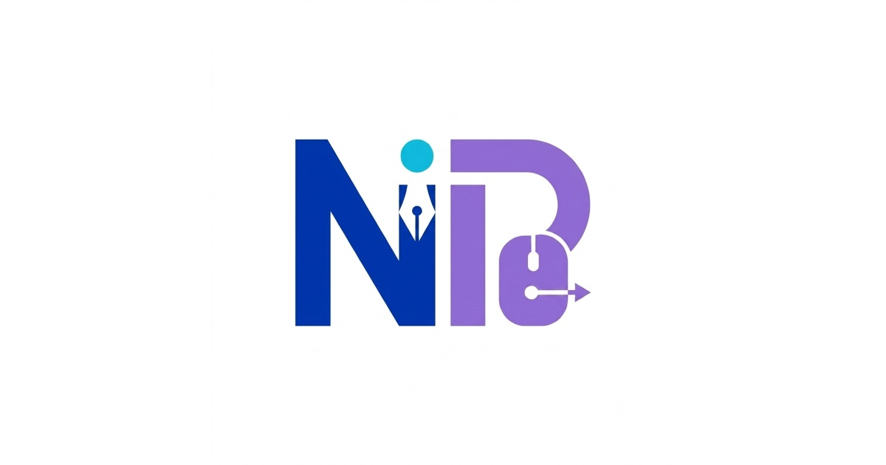
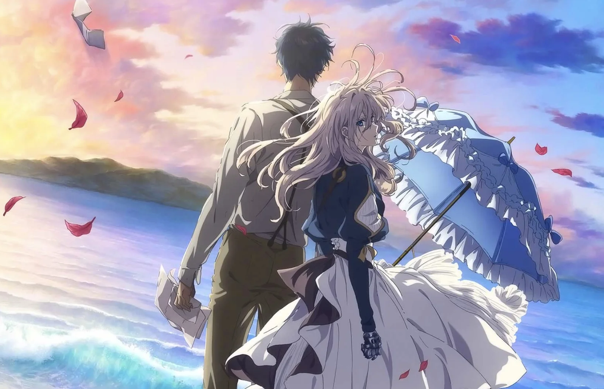

My blog about anything fun
Life so bitter and here just for fun
The Solar System in a Table
Time stamp: 2026-07-04
A quick reference table for the eight planets in our solar system, with rounded values.
Read more
A fantastic anime show
Time stamp: 2026-07-02
Violet Evergarden episode one - a former weapon becomes an Auto Memory Doll, ghostwriting letters she cannot yet understand.
Read more

FIFA and UFO
Time stamp: 2026-06-29
On board to the galaxy out of our solar system, hoping I can still watch the FIFA world cup on the UFO.
Read more